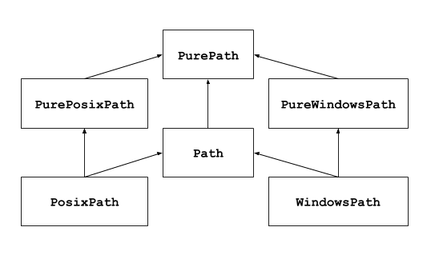

pathlib — Object-oriented filesystem paths
pathlib
New in version 3.4:
Source code: :source:`Lib/pathlib/`
This module offers classes representing filesystem paths with semantics appropriate for different operating systems. Path classes are divided between pure paths, which provide purely computational operations without I/O, and concrete paths, which inherit from pure paths but also provide I/O operations.

If you've never used this module before or just aren't sure which class is
right for your task, Path is most likely what you need. It instantiates
a concrete path for the platform the code is running on.
Pure paths are useful in some special cases; for example:
If you want to manipulate Windows paths on a Unix machine (or vice versa). You cannot instantiate a
WindowsPathwhen running on Unix, but you can instantiatePureWindowsPath.You want to make sure that your code only manipulates paths without actually accessing the OS. In this case, instantiating one of the pure classes may be useful since those simply don't have any OS-accessing operations.
See also
PEP 428: The pathlib module – object-oriented filesystem paths.
See also
For low-level path manipulation on strings, you can also use the
os.path module.
Basic use
Importing the main class:
>>> Listing subdirectories:
>>> =
>>>
Listing Python source files in this directory tree:
>>>
Navigating inside a directory tree:
>>> =
>>> = / /
>>>
>>>
Querying path properties:
>>>
True
>>>
FalseOpening a file:
>>>
...
Exceptions
- exception
UnsupportedOperation An exception inheriting
NotImplementedErrorthat is raised when an unsupported operation is called on a path object.New in version 3.13:
Pure paths
Pure path objects provide path-handling operations which don't actually access a filesystem. There are three ways to access these classes, which we also call flavours:
- class
PurePath(*pathsegments) A generic class that represents the system's path flavour (instantiating it creates either a
PurePosixPathor aPureWindowsPath):>>> # Running on a Unix machine
Each element of pathsegments can be either a string representing a path segment, or an object implementing the
os.PathLikeinterface where the__fspath__method returns a string, such as another path object:>>> >>>
When pathsegments is empty, the current directory is assumed:
>>>
If a segment is an absolute path, all previous segments are ignored (like
os.path.join):>>> >>>
On Windows, the drive is not reset when a rooted relative path segment (e.g.,
r'\foo') is encountered:>>>
Spurious slashes and single dots are collapsed, but double dots (
'..') and leading double slashes ('//') are not, since this would change the meaning of a path for various reasons (e.g. symbolic links, UNC paths):>>> >>> >>> >>>
(a naïve approach would make
PurePosixPath('foo/../bar')equivalent toPurePosixPath('bar'), which is wrong iffoois a symbolic link to another directory)Pure path objects implement the
os.PathLikeinterface, allowing them to be used anywhere the interface is accepted.Changed in version 3.6:
Added support for the
os.PathLikeinterface.
- class
PurePosixPath(*pathsegments) A subclass of
PurePath, this path flavour represents non-Windows filesystem paths:>>>
pathsegments is specified similarly to
PurePath.
- class
PureWindowsPath(*pathsegments) A subclass of
PurePath, this path flavour represents Windows filesystem paths, including UNC paths:>>> >>>
pathsegments is specified similarly to
PurePath.
Regardless of the system you're running on, you can instantiate all of these classes, since they don't provide any operation that does system calls.
General properties
Paths are immutable and hashable. Paths of a same flavour are comparable and orderable. These properties respect the flavour's case-folding semantics:
>>> ==
False
>>> ==
True
>>> in
True
>>> <
TruePaths of a different flavour compare unequal and cannot be ordered:
>>> ==
False
>>> <
:
, 1, in <>
: not and Operators
The slash operator helps create child paths, like os.path.join.
If the argument is an absolute path, the previous path is ignored.
On Windows, the drive is not reset when the argument is a rooted
relative path (e.g., r'\foo'):
>>> =
>>>
>>> / /
>>> =
>>> /
>>> /
>>>
A path object can be used anywhere an object implementing os.PathLike
is accepted:
>>>
>>> =
>>>
The string representation of a path is the raw filesystem path itself (in native form, e.g. with backslashes under Windows), which you can pass to any function taking a file path as a string:
>>> =
>>>
>>> =
>>>
Similarly, calling bytes on a path gives the raw filesystem path as a
bytes object, as encoded by os.fsencode:
>>>
bNote
Calling bytes is only recommended under Unix. Under Windows,
the unicode form is the canonical representation of filesystem paths.
Accessing individual parts
To access the individual "parts" (components) of a path, use the following property:
PurePath.partsA tuple giving access to the path's various components:
>>> = >>> >>> = >>>
(note how the drive and local root are regrouped in a single part)
Methods and properties
Pure paths provide the following methods and properties:
PurePath.parserThe implementation of the
os.pathmodule used for low-level path parsing and joining: eitherposixpathorntpath.New in version 3.13:
PurePath.driveA string representing the drive letter or name, if any:
>>> . >>> . >>> .
UNC shares are also considered drives:
>>> .
PurePath.rootA string representing the (local or global) root, if any:
>>> . >>> . >>> .
UNC shares always have a root:
>>> .
If the path starts with more than two successive slashes,
PurePosixPathcollapses them:>>> . >>> . >>> .
Note
This behavior conforms to The Open Group Base Specifications Issue 6, paragraph 4.11 Pathname Resolution:
"A pathname that begins with two successive slashes may be interpreted in an implementation-defined manner, although more than two leading slashes shall be treated as a single slash."
PurePath.anchorThe concatenation of the drive and root:
>>> . >>> . >>> . >>> .
PurePath.parentsAn immutable sequence providing access to the logical ancestors of the path:
>>> = >>> >>> >>>
Changed in version 3.10:
The parents sequence now supports slices and negative index values.
PurePath.parentThe logical parent of the path:
>>> = >>>
You cannot go past an anchor, or empty path:
>>> = >>> >>> = >>>
Note
This is a purely lexical operation, hence the following behaviour:
>>> = >>>
If you want to walk an arbitrary filesystem path upwards, it is recommended to first call
Path.resolveso as to resolve symlinks and eliminate".."components.
PurePath.nameA string representing the final path component, excluding the drive and root, if any:
>>> .
UNC drive names are not considered:
>>> . >>> .
PurePath.suffixThe last dot-separated portion of the final component, if any:
>>> . >>> . >>> .
This is commonly called the file extension.
Changed in version 3.14:
A single dot ("
.") is considered a valid suffix.
PurePath.suffixesA list of the path's suffixes, often called file extensions:
>>> . >>> . >>> .
Changed in version 3.14:
A single dot ("
.") is considered a valid suffix.
PurePath.stemThe final path component, without its suffix:
>>> . >>> . >>> .
PurePath.as_posix()Return a string representation of the path with forward slashes (
/):>>> = >>> >>>
PurePath.is_absolute()Return whether the path is absolute or not. A path is considered absolute if it has both a root and (if the flavour allows) a drive:
>>> True >>> False >>> True >>> False >>> False >>> True
PurePath.is_relative_to(other)Return whether or not this path is relative to the other path.
>>> p = PurePath('/etc/passwd') >>> p.is_relative_to('/etc') True >>> p.is_relative_to('/usr') FalseThis method is string-based; it neither accesses the filesystem nor treats "
.." segments specially. The following code is equivalent:>>> u = PurePath('/usr') >>> u == p or u in p.parents FalseNew in version 3.9:
.. deprecated-removed:: 3.12 3.14 Passing additional arguments is deprecated; if supplied, they are joined with *other*.
PurePath.is_reserved()With
PureWindowsPath, returnTrueif the path is considered reserved under Windows,Falseotherwise. WithPurePosixPath,Falseis always returned.Changed in version 3.13:
Windows path names that contain a colon, or end with a dot or a space, are considered reserved. UNC paths may be reserved.
.. deprecated-removed:: 3.13 3.15 This method is deprecated; use :func:`os.path.isreserved` to detect reserved paths on Windows.
PurePath.joinpath(*pathsegments)Calling this method is equivalent to combining the path with each of the given pathsegments in turn:
>>> >>> >>> >>>
PurePath.full_match(pattern, *, case_sensitive=None)Match this path against the provided glob-style pattern. Return
Trueif matching is successful,Falseotherwise. For example:>>> True >>> False >>> True >>> True
See also
Pattern language documentation.
As with other methods, case-sensitivity follows platform defaults:
>>> False >>> True
Set case_sensitive to
TrueorFalseto override this behaviour.New in version 3.13:
PurePath.match(pattern, *, case_sensitive=None)Match this path against the provided non-recursive glob-style pattern. Return
Trueif matching is successful,Falseotherwise.This method is similar to
full_match, but empty patterns aren't allowed (ValueErroris raised), the recursive wildcard "**" isn't supported (it acts like non-recursive "*"), and if a relative pattern is provided, then matching is done from the right:>>> True >>> True >>> False
Changed in version 3.12:
The pattern parameter accepts a path-like object.
Changed in version 3.12:
The case_sensitive parameter was added.
PurePath.relative_to(other, walk_up=False)Compute a version of this path relative to the path represented by other. If it's impossible,
ValueErroris raised:>>> = >>> >>> >>> : , 1, in <> , 941, in : is not in is and is .
When walk_up is false (the default), the path must start with other. When the argument is true,
..entries may be added to form the relative path. In all other cases, such as the paths referencing different drives,ValueErroris raised.:>>> >>> : , 1, in <> , 941, in : is not is and is .
Warning
This function is part of
PurePathand works with strings. It does not check or access the underlying file structure. This can impact the walk_up option as it assumes that no symlinks are present in the path; callresolvefirst if necessary to resolve symlinks.Changed in version 3.12:
The walk_up parameter was added (old behavior is the same as
walk_up=False)... deprecated-removed:: 3.12 3.14 Passing additional positional arguments is deprecated; if supplied, they are joined with *other*.
PurePath.with_name(name)Return a new path with the
namechanged. If the original path doesn't have a name, ValueError is raised:>>> = >>> >>> = >>> : , 1, in <> , 751, in :
PurePath.with_stem(stem)Return a new path with the
stemchanged. If the original path doesn't have a name, ValueError is raised:>>> = >>> >>> = >>> >>> = >>> : , 1, in <> , 861, in return , 851, in :
New in version 3.9:
PurePath.with_suffix(suffix)Return a new path with the
suffixchanged. If the original path doesn't have a suffix, the new suffix is appended instead. If the suffix is an empty string, the original suffix is removed:>>> = >>> >>> = >>> >>> = >>>
Changed in version 3.14:
A single dot ("
.") is considered a valid suffix. In previous versions,ValueErroris raised if a single dot is supplied.
PurePath.with_segments(*pathsegments)Create a new path object of the same type by combining the given pathsegments. This method is called whenever a derivative path is created, such as from
parentandrelative_to. Subclasses may override this method to pass information to derivative paths, for example:= return = = / # 42
New in version 3.12:
Concrete paths
Concrete paths are subclasses of the pure path classes. In addition to operations provided by the latter, they also provide methods to do system calls on path objects. There are three ways to instantiate concrete paths:
- class
Path(*pathsegments) A subclass of
PurePath, this class represents concrete paths of the system's path flavour (instantiating it creates either aPosixPathor aWindowsPath):>>>
pathsegments is specified similarly to
PurePath.
- class
PosixPath(*pathsegments) A subclass of
PathandPurePosixPath, this class represents concrete non-Windows filesystem paths:>>>
pathsegments is specified similarly to
PurePath.Changed in version 3.13:
Raises
UnsupportedOperationon Windows. In previous versions,NotImplementedErrorwas raised instead.
- class
WindowsPath(*pathsegments) A subclass of
PathandPureWindowsPath, this class represents concrete Windows filesystem paths:>>>
pathsegments is specified similarly to
PurePath.Changed in version 3.13:
Raises
UnsupportedOperationon non-Windows platforms. In previous versions,NotImplementedErrorwas raised instead.
You can only instantiate the class flavour that corresponds to your system (allowing system calls on non-compatible path flavours could lead to bugs or failures in your application):
>>>
>>>
>>>
>>>
>>>
:
, 1, in <>
, 798, in
% )
: Some concrete path methods can raise an OSError if a system call fails
(for example because the path doesn't exist).
Parsing and generating URIs
Concrete path objects can be created from, and represented as, 'file' URIs conforming to :rfc:`8089`.
Note
File URIs are not portable across machines with different filesystem encodings.
- classmethod
Path.from_uri(uri) Return a new path object from parsing a 'file' URI. For example:
>>> =
On Windows, DOS device and UNC paths may be parsed from URIs:
>>> = >>> =
Several variant forms are supported:
>>> = >>> = >>> = >>> =
ValueErroris raised if the URI does not start withfile:, or the parsed path isn't absolute.New in version 3.13:
Changed in version 3.14:
The URL authority is discarded if it matches the local hostname. Otherwise, if the authority isn't empty or
localhost, then on Windows a UNC path is returned (as before), and on other platforms aValueErroris raised.
Path.as_uri()Represent the path as a 'file' URI.
ValueErroris raised if the path isn't absolute.>>> p = PosixPath('/etc/passwd') >>> p.as_uri() 'file:///etc/passwd' >>> p = WindowsPath('c:/Windows') >>> p.as_uri() 'file:///c:/Windows'.. deprecated-removed:: 3.14 3.19 Calling this method from :class:`PurePath` rather than :class:`Path` is possible but deprecated. The method's use of :func:`os.fsencode` makes it strictly impure.
Expanding and resolving paths
- classmethod
Path.home() Return a new path object representing the user's home directory (as returned by
os.path.expanduserwith~construct). If the home directory can't be resolved,RuntimeErroris raised.>>>
New in version 3.5:
Path.expanduser()Return a new path with expanded
~and~userconstructs, as returned byos.path.expanduser. If a home directory can't be resolved,RuntimeErroris raised.>>> = >>>
New in version 3.5:
- classmethod
Path.cwd() Return a new path object representing the current directory (as returned by
os.getcwd):>>>
Path.absolute()Make the path absolute, without normalization or resolving symlinks. Returns a new path object:
>>> = >>> >>>
Path.resolve(strict=False)Make the path absolute, resolving any symlinks. A new path object is returned:
>>> = >>> >>>
"
.." components are also eliminated (this is the only method to do so):>>> = >>>
If a path doesn't exist or a symlink loop is encountered, and strict is
True,OSErroris raised. If strict isFalse, the path is resolved as far as possible and any remainder is appended without checking whether it exists.Changed in version 3.6:
The strict parameter was added (pre-3.6 behavior is strict).
Changed in version 3.13:
Symlink loops are treated like other errors:
OSErroris raised in strict mode, and no exception is raised in non-strict mode. In previous versions,RuntimeErroris raised no matter the value of strict.
Path.readlink()Return the path to which the symbolic link points (as returned by
os.readlink):>>> = >>> >>>
New in version 3.9:
Changed in version 3.13:
Raises
UnsupportedOperationifos.readlinkis not available. In previous versions,NotImplementedErrorwas raised.
Querying file type and status
Changed in version 3.8:
exists, is_dir, is_file,
is_mount, is_symlink,
is_block_device, is_char_device,
is_fifo, is_socket now return False
instead of raising an exception for paths that contain characters
unrepresentable at the OS level.
Changed in version 3.14:
The methods given above now return False instead of raising any
OSError exception from the operating system. In previous versions,
some kinds of OSError exception are raised, and others suppressed.
The new behaviour is consistent with os.path.exists,
os.path.isdir, etc. Use stat to retrieve the file
status without suppressing exceptions.
Path.stat(*, follow_symlinks=True)Return an
os.stat_resultobject containing information about this path, likeos.stat. The result is looked up at each call to this method.This method normally follows symlinks; to stat a symlink add the argument
follow_symlinks=False, or uselstat.>>> = >>> . 956 >>> . 1327883547.852554
Changed in version 3.10:
The follow_symlinks parameter was added.
Path.lstat()Like
Path.statbut, if the path points to a symbolic link, return the symbolic link's information rather than its target's.
Path.exists(*, follow_symlinks=True)Return
Trueif the path points to an existing file or directory.Falsewill be returned if the path is invalid, inaccessible or missing. UsePath.statto distinguish between these cases.This method normally follows symlinks; to check if a symlink exists, add the argument
follow_symlinks=False.>>> True >>> True >>> True >>> False
Changed in version 3.12:
The follow_symlinks parameter was added.
Path.is_file(*, follow_symlinks=True)Return
Trueif the path points to a regular file.Falsewill be returned if the path is invalid, inaccessible or missing, or if it points to something other than a regular file. UsePath.statto distinguish between these cases.This method normally follows symlinks; to exclude symlinks, add the argument
follow_symlinks=False.Changed in version 3.13:
The follow_symlinks parameter was added.
Path.is_dir(*, follow_symlinks=True)Return
Trueif the path points to a directory.Falsewill be returned if the path is invalid, inaccessible or missing, or if it points to something other than a directory. UsePath.statto distinguish between these cases.This method normally follows symlinks; to exclude symlinks to directories, add the argument
follow_symlinks=False.Changed in version 3.13:
The follow_symlinks parameter was added.
Path.is_symlink()Return
Trueif the path points to a symbolic link, even if that symlink is broken.Falsewill be returned if the path is invalid, inaccessible or missing, or if it points to something other than a symbolic link. UsePath.statto distinguish between these cases.
Path.is_junction()Return
Trueif the path points to a junction, andFalsefor any other type of file. Currently only Windows supports junctions.New in version 3.12:
Path.is_mount()Return
Trueif the path is a :dfn:`mount point`: a point in a file system where a different file system has been mounted. On POSIX, the function checks whether path's parent, :file:`path/..`, is on a different device than path, or whether :file:`path/..` and path point to the same i-node on the same device — this should detect mount points for all Unix and POSIX variants. On Windows, a mount point is considered to be a drive letter root (e.g.c:\), a UNC share (e.g.\\server\share), or a mounted filesystem directory.New in version 3.7:
Changed in version 3.12:
Windows support was added.
Path.is_socket()Return
Trueif the path points to a Unix socket.Falsewill be returned if the path is invalid, inaccessible or missing, or if it points to something other than a Unix socket. UsePath.statto distinguish between these cases.
Path.is_fifo()Return
Trueif the path points to a FIFO.Falsewill be returned if the path is invalid, inaccessible or missing, or if it points to something other than a FIFO. UsePath.statto distinguish between these cases.
Path.is_block_device()Return
Trueif the path points to a block device.Falsewill be returned if the path is invalid, inaccessible or missing, or if it points to something other than a block device. UsePath.statto distinguish between these cases.
Path.is_char_device()Return
Trueif the path points to a character device.Falsewill be returned if the path is invalid, inaccessible or missing, or if it points to something other than a character device. UsePath.statto distinguish between these cases.
Path.samefile(other_path)Return whether this path points to the same file as other_path, which can be either a Path object, or a string. The semantics are similar to
os.path.samefileandos.path.samestat.An
OSErrorcan be raised if either file cannot be accessed for some reason.>>> = >>> = >>> False >>> True
New in version 3.5:
Path.infoA
PathInfoobject that supports querying file type information. The object exposes methods that cache their results, which can help reduce the number of system calls needed when switching on file type. For example:>>> = >>> ... ... ... ... ... ... ... ...
If the path was generated from
Path.iterdirthen this attribute is initialized with some information about the file type gleaned from scanning the parent directory. Merely accessingPath.infodoes not perform any filesystem queries.To fetch up-to-date information, it's best to call
Path.is_dir,is_fileandis_symlinkrather than methods of this attribute. There is no way to reset the cache; instead you can create a new path object with an empty info cache viap = Path(p).New in version 3.14:
Reading and writing files
Path.open(mode='r', buffering=-1, encoding=None, errors=None, newline=None)Open the file pointed to by the path, like the built-in
openfunction does:>>> = >>> ... ...
Path.read_text(encoding=None, errors=None, newline=None)Return the decoded contents of the pointed-to file as a string:
>>> = >>> 18 >>>
The file is opened and then closed. The optional parameters have the same meaning as in
open.New in version 3.5:
Changed in version 3.13:
The newline parameter was added.
Path.read_bytes()Return the binary contents of the pointed-to file as a bytes object:
>>> = >>> 20 >>> b
New in version 3.5:
Path.write_text(data, encoding=None, errors=None, newline=None)Open the file pointed to in text mode, write data to it, and close the file:
>>> = >>> 18 >>>
An existing file of the same name is overwritten. The optional parameters have the same meaning as in
open.New in version 3.5:
Changed in version 3.10:
The newline parameter was added.
Path.write_bytes(data)Open the file pointed to in bytes mode, write data to it, and close the file:
>>> = >>> 20 >>> b
An existing file of the same name is overwritten.
New in version 3.5:
Reading directories
Path.iterdir()When the path points to a directory, yield path objects of the directory contents:
>>> = >>> ...
The children are yielded in arbitrary order, and the special entries
'.'and'..'are not included. If a file is removed from or added to the directory after creating the iterator, it is unspecified whether a path object for that file is included.If the path is not a directory or otherwise inaccessible,
OSErroris raised.
Path.glob(pattern, *, case_sensitive=None, recurse_symlinks=False)Glob the given relative pattern in the directory represented by this path, yielding all matching files (of any kind):
>>> >>> >>>
See also
Pattern language documentation.
By default, or when the case_sensitive keyword-only argument is set to
None, this method matches paths using platform-specific casing rules: typically, case-sensitive on POSIX, and case-insensitive on Windows. Set case_sensitive toTrueorFalseto override this behaviour.By default, or when the recurse_symlinks keyword-only argument is set to
False, this method follows symlinks except when expanding "**" wildcards. Set recurse_symlinks toTrueto always follow symlinks... audit-event:: pathlib.Path.glob self,pattern pathlib.Path.glob
Changed in version 3.12:
The case_sensitive parameter was added.
Changed in version 3.13:
The recurse_symlinks parameter was added.
Changed in version 3.13:
The pattern parameter accepts a path-like object.
Changed in version 3.13:
Any
OSErrorexceptions raised from scanning the filesystem are suppressed. In previous versions, such exceptions are suppressed in many cases, but not all.
Path.rglob(pattern, *, case_sensitive=None, recurse_symlinks=False)Glob the given relative pattern recursively. This is like calling
Path.globwith "**/" added in front of the pattern.See also
Pattern language and
Path.globdocumentation... audit-event:: pathlib.Path.rglob self,pattern pathlib.Path.rglob
Changed in version 3.12:
The case_sensitive parameter was added.
Changed in version 3.13:
The recurse_symlinks parameter was added.
Changed in version 3.13:
The pattern parameter accepts a path-like object.
Path.walk(top_down=True, on_error=None, follow_symlinks=False)Generate the file names in a directory tree by walking the tree either top-down or bottom-up.
For each directory in the directory tree rooted at self (including self but excluding '.' and '..'), the method yields a 3-tuple of
(dirpath, dirnames, filenames).dirpath is a
Pathto the directory currently being walked, dirnames is a list of strings for the names of subdirectories in dirpath (excluding'.'and'..'), and filenames is a list of strings for the names of the non-directory files in dirpath. To get a full path (which begins with self) to a file or directory in dirpath, dodirpath / name. Whether or not the lists are sorted is file system-dependent.If the optional argument top_down is true (which is the default), the triple for a directory is generated before the triples for any of its subdirectories (directories are walked top-down). If top_down is false, the triple for a directory is generated after the triples for all of its subdirectories (directories are walked bottom-up). No matter the value of top_down, the list of subdirectories is retrieved before the triples for the directory and its subdirectories are walked.
When top_down is true, the caller can modify the dirnames list in-place (for example, using :keyword:`del` or slice assignment), and
Path.walkwill only recurse into the subdirectories whose names remain in dirnames. This can be used to prune the search, or to impose a specific order of visiting, or even to informPath.walkabout directories the caller creates or renames before it resumesPath.walkagain. Modifying dirnames when top_down is false has no effect on the behavior ofPath.walksince the directories in dirnames have already been generated by the time dirnames is yielded to the caller.By default, errors from
os.scandirare ignored. If the optional argument on_error is specified, it should be a callable; it will be called with one argument, anOSErrorinstance. The callable can handle the error to continue the walk or re-raise it to stop the walk. Note that the filename is available as thefilenameattribute of the exception object.By default,
Path.walkdoes not follow symbolic links, and instead adds them to the filenames list. Set follow_symlinks to true to resolve symlinks and place them in dirnames and filenames as appropriate for their targets, and consequently visit directories pointed to by symlinks (where supported).Note
Be aware that setting follow_symlinks to true can lead to infinite recursion if a link points to a parent directory of itself.
Path.walkdoes not keep track of the directories it has already visited.Note
Path.walkassumes the directories it walks are not modified during execution. For example, if a directory from dirnames has been replaced with a symlink and follow_symlinks is false,Path.walkwill still try to descend into it. To prevent such behavior, remove directories from dirnames as appropriate.Note
Unlike
os.walk,Path.walklists symlinks to directories in filenames if follow_symlinks is false.This example displays the number of bytes used by all files in each directory, while ignoring
__pycache__directories:This next example is a simple implementation of
shutil.rmtree. Walking the tree bottom-up is essential asrmdirdoesn't allow deleting a directory before it is empty:# Delete everything reachable from the directory "top". # CAUTION: This is dangerous! For example, if top == Path('/'), # it could delete all of your files.
New in version 3.12:
Creating files and directories
Path.touch(mode=0o666, exist_ok=True)Create a file at this given path. If mode is given, it is combined with the process's
umaskvalue to determine the file mode and access flags. If the file already exists, the function succeeds when exist_ok is true (and its modification time is updated to the current time), otherwiseFileExistsErroris raised.See also
The
open,write_textandwrite_bytesmethods are often used to create files.
Path.mkdir(mode=0o777, parents=False, exist_ok=False)Create a new directory at this given path. If mode is given, it is combined with the process's
umaskvalue to determine the file mode and access flags. If the path already exists,FileExistsErroris raised.If parents is true, any missing parents of this path are created as needed; they are created with the default permissions without taking mode into account (mimicking the POSIX
mkdir -pcommand).If parents is false (the default), a missing parent raises
FileNotFoundError.If exist_ok is false (the default),
FileExistsErroris raised if the target directory already exists.If exist_ok is true,
FileExistsErrorwill not be raised unless the given path already exists in the file system and is not a directory (same behavior as the POSIXmkdir -pcommand).Changed in version 3.5:
The exist_ok parameter was added.
Path.symlink_to(target, target_is_directory=False)Make this path a symbolic link pointing to target.
On Windows, a symlink represents either a file or a directory, and does not morph to the target dynamically. If the target is present, the type of the symlink will be created to match. Otherwise, the symlink will be created as a directory if target_is_directory is true or a file symlink (the default) otherwise. On non-Windows platforms, target_is_directory is ignored.
>>> = >>> >>> >>> . 956 >>> . 8
Note
The order of arguments (link, target) is the reverse of
os.symlink's.Changed in version 3.13:
Raises
UnsupportedOperationifos.symlinkis not available. In previous versions,NotImplementedErrorwas raised.
Path.hardlink_to(target)Make this path a hard link to the same file as target.
Note
The order of arguments (link, target) is the reverse of
os.link's.New in version 3.10:
Changed in version 3.13:
Raises
UnsupportedOperationifos.linkis not available. In previous versions,NotImplementedErrorwas raised.
Copying, moving and deleting
Path.copy(target, *, follow_symlinks=True, preserve_metadata=False)Copy this file or directory tree to the given target, and return a new
Pathinstance pointing to target.If the source is a file, the target will be replaced if it is an existing file. If the source is a symlink and follow_symlinks is true (the default), the symlink's target is copied. Otherwise, the symlink is recreated at the destination.
If preserve_metadata is false (the default), only directory structures and file data are guaranteed to be copied. Set preserve_metadata to true to ensure that file and directory permissions, flags, last access and modification times, and extended attributes are copied where supported. This argument has no effect when copying files on Windows (where metadata is always preserved).
Note
Where supported by the operating system and file system, this method performs a lightweight copy, where data blocks are only copied when modified. This is known as copy-on-write.
New in version 3.14:
Path.copy_into(target_dir, *, follow_symlinks=True, \preserve_metadata=False)Copy this file or directory tree into the given target_dir, which should be an existing directory. Other arguments are handled identically to
Path.copy. Returns a newPathinstance pointing to the copy.New in version 3.14:
Path.rename(target)Rename this file or directory to the given target, and return a new
Pathinstance pointing to target. On Unix, if target exists and is a file, it will be replaced silently if the user has permission. On Windows, if target exists,FileExistsErrorwill be raised. target can be either a string or another path object:>>> = >>> 9 >>> = >>> >>>
The target path may be absolute or relative. Relative paths are interpreted relative to the current working directory, not the directory of the
Pathobject.It is implemented in terms of
os.renameand gives the same guarantees.Changed in version 3.8:
Added return value, return the new
Pathinstance.
Path.replace(target)Rename this file or directory to the given target, and return a new
Pathinstance pointing to target. If target points to an existing file or empty directory, it will be unconditionally replaced.The target path may be absolute or relative. Relative paths are interpreted relative to the current working directory, not the directory of the
Pathobject.Changed in version 3.8:
Added return value, return the new
Pathinstance.
Path.move(target)Move this file or directory tree to the given target, and return a new
Pathinstance pointing to target.If the target doesn't exist it will be created. If both this path and the target are existing files, then the target is overwritten. If both paths point to the same file or directory, or the target is a non-empty directory, then
OSErroris raised.If both paths are on the same filesystem, the move is performed with
os.replace. Otherwise, this path is copied (preserving metadata and symlinks) and then deleted.New in version 3.14:
Path.move_into(target_dir)Move this file or directory tree into the given target_dir, which should be an existing directory. Returns a new
Pathinstance pointing to the moved path.New in version 3.14:
Path.unlink(missing_ok=False)Remove this file or symbolic link. If the path points to a directory, use
Path.rmdirinstead.If missing_ok is false (the default),
FileNotFoundErroris raised if the path does not exist.If missing_ok is true,
FileNotFoundErrorexceptions will be ignored (same behavior as the POSIXrm -fcommand).Changed in version 3.8:
The missing_ok parameter was added.
Path.rmdir()Remove this directory. The directory must be empty.
Permissions and ownership
Path.owner(*, follow_symlinks=True)Return the name of the user owning the file.
KeyErroris raised if the file's user identifier (UID) isn't found in the system database.This method normally follows symlinks; to get the owner of the symlink, add the argument
follow_symlinks=False.Changed in version 3.13:
Raises
UnsupportedOperationif thepwdmodule is not available. In earlier versions,NotImplementedErrorwas raised.Changed in version 3.13:
The follow_symlinks parameter was added.
Path.group(*, follow_symlinks=True)Return the name of the group owning the file.
KeyErroris raised if the file's group identifier (GID) isn't found in the system database.This method normally follows symlinks; to get the group of the symlink, add the argument
follow_symlinks=False.Changed in version 3.13:
Raises
UnsupportedOperationif thegrpmodule is not available. In earlier versions,NotImplementedErrorwas raised.Changed in version 3.13:
The follow_symlinks parameter was added.
Path.chmod(mode, *, follow_symlinks=True)Change the file mode and permissions, like
os.chmod.This method normally follows symlinks. Some Unix flavours support changing permissions on the symlink itself; on these platforms you may add the argument
follow_symlinks=False, or uselchmod.>>> = >>> . 33277 >>> >>> . 33060
Changed in version 3.10:
The follow_symlinks parameter was added.
Path.lchmod(mode)Like
Path.chmodbut, if the path points to a symbolic link, the symbolic link's mode is changed rather than its target's.
Pattern language
The following wildcards are supported in patterns for
full_match, glob and rglob:
**(entire segment)Matches any number of file or directory segments, including zero.
*(entire segment)Matches one file or directory segment.
*(part of a segment)Matches any number of non-separator characters, including zero.
?Matches one non-separator character.
[seq]Matches one character in seq, where seq is a sequence of characters. Range expressions are supported; for example,
[a-z]matches any lowercase ASCII letter. Multiple ranges can be combined:[a-zA-Z0-9_]matches any ASCII letter, digit, or underscore.[!seq]Matches one character not in seq, where seq follows the same rules as above.
For a literal match, wrap the meta-characters in brackets.
For example, "[?]" matches the character "?".
The "**" wildcard enables recursive globbing. A few examples:
Pattern |
Meaning |
|---|---|
" |
Any path with at least one segment. |
" |
Any path with a final segment ending " |
" |
Any path starting with " |
" |
Any path starting with " |
Note
Globbing with the "**" wildcard visits every directory in the tree.
Large directory trees may take a long time to search.
Changed in version 3.13:
Globbing with a pattern that ends with "**" returns both files and
directories. In previous versions, only directories were returned.
In Path.glob and rglob, a trailing slash may be added to
the pattern to match only directories.
Changed in version 3.11:
Globbing with a pattern that ends with a pathname components separator
(sep or altsep) returns only directories.
Comparison to the glob module
The patterns accepted and results generated by Path.glob and
Path.rglob differ slightly from those by the glob module:
Files beginning with a dot are not special in pathlib. This is like passing
include_hidden=Truetoglob.glob."
**" pattern components are always recursive in pathlib. This is like passingrecursive=Truetoglob.glob."
**" pattern components do not follow symlinks by default in pathlib. This behaviour has no equivalent inglob.glob, but you can passrecurse_symlinks=TruetoPath.globfor compatible behaviour.Like all
PurePathandPathobjects, the values returned fromPath.globandPath.rglobdon't include trailing slashes.The values returned from pathlib's
path.glob()andpath.rglob()include the path as a prefix, unlike the results ofglob.glob(root_dir=path).The values returned from pathlib's
path.glob()andpath.rglob()may include path itself, for example when globbing "**", whereas the results ofglob.glob(root_dir=path)never include an empty string that would correspond to path.
Comparison to the os and os.path modules
pathlib implements path operations using PurePath and Path
objects, and so it's said to be object-oriented. On the other hand, the
os and os.path modules supply functions that work with low-level
str and bytes objects, which is a more procedural approach. Some
users consider the object-oriented style to be more readable.
Many functions in os and os.path support bytes paths and
paths relative to directory descriptors. These features aren't
available in pathlib.
Python's str and bytes types, and portions of the os and
os.path modules, are written in C and are very speedy. pathlib is
written in pure Python and is often slower, but rarely slow enough to matter.
pathlib's path normalization is slightly more opinionated and consistent than
os.path. For example, whereas os.path.abspath eliminates
".." segments from a path, which may change its meaning if symlinks are
involved, Path.absolute preserves these segments for greater safety.
pathlib's path normalization may render it unsuitable for some applications:
pathlib normalizes
Path("my_folder/")toPath("my_folder"), which changes a path's meaning when supplied to various operating system APIs and command-line utilities. Specifically, the absence of a trailing separator may allow the path to be resolved as either a file or directory, rather than a directory only.pathlib normalizes
Path("./my_program")toPath("my_program"), which changes a path's meaning when used as an executable search path, such as in a shell or when spawning a child process. Specifically, the absence of a separator in the path may force it to be looked up in :envvar:`PATH` rather than the current directory.
As a consequence of these differences, pathlib is not a drop-in replacement
for os.path.
Corresponding tools
Below is a table mapping various os functions to their corresponding
PurePath/Path equivalent.
|
|
|
|
|
|
|
|
.. rubric:: Footnotes
Protocols
pathlib.types
The pathlib.types module provides types for static type checking.
New in version 3.14:
- class
PathInfo() A
typing.Protocoldescribing thePath.infoattribute. Implementations may return cached results from their methods.exists(*, follow_symlinks=True)Return
Trueif the path is an existing file or directory, or any other kind of file; returnFalseif the path doesn't exist.If follow_symlinks is
False, returnTruefor symlinks without checking if their targets exist.
is_dir(*, follow_symlinks=True)Return
Trueif the path is a directory, or a symbolic link pointing to a directory; returnFalseif the path is (or points to) any other kind of file, or if it doesn't exist.If follow_symlinks is
False, returnTrueonly if the path is a directory (without following symlinks); returnFalseif the path is any other kind of file, or if it doesn't exist.
is_file(*, follow_symlinks=True)Return
Trueif the path is a file, or a symbolic link pointing to a file; returnFalseif the path is (or points to) a directory or other non-file, or if it doesn't exist.If follow_symlinks is
False, returnTrueonly if the path is a file (without following symlinks); returnFalseif the path is a directory or other non-file, or if it doesn't exist.
is_symlink()Return
Trueif the path is a symbolic link (even if broken); returnFalseif the path is a directory or any kind of file, or if it doesn't exist.